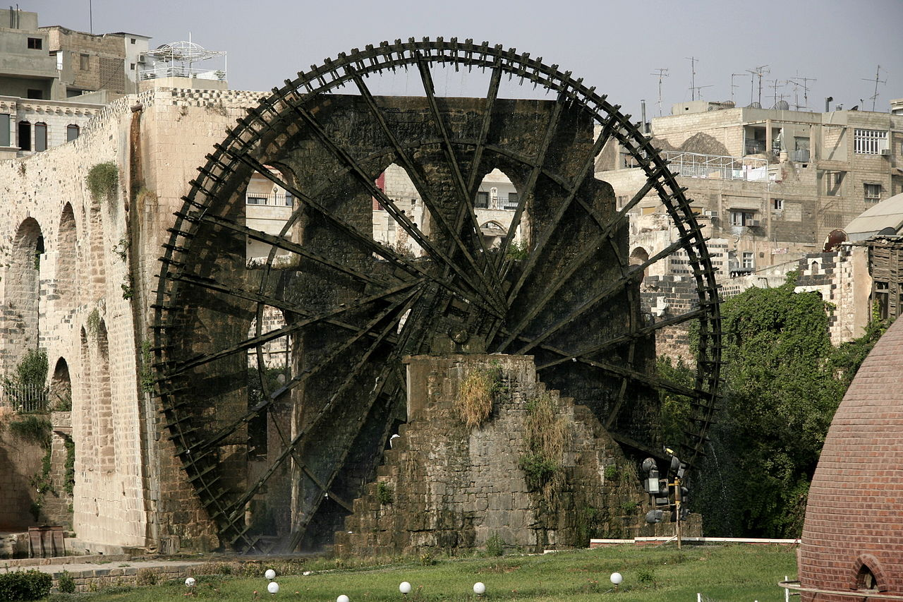

دمشق
.jpg)
اللاذقية

الجمهورية العربية السورية هي دولة عربية مؤلفة من 14 محافظة عاصمتها وأكبر مدنها هي دمشق تقع ضمن منطقة الشرق الأوسط في غربي آسيا يحدها شمالاََ تركيا وشرقاََ العراق وجنوبا الأردن وغرباََ فلسطين ولبنان والبحر المتوسط

هي إحدى المحافظات السورية الأربع عشرة، وتتألف فقط من مدينة دمشق، عاصمة الجمهورية العربية السورية التي يعتبرها البعض أقدم مدينة مأهولة في التاريخ، بالإضافة إلى ضاحية مخيم اليرموك. تحيط محافظة ريف دمشق بمحافظة دمشق من جميع الجوانب. جنوباً محافظات القنيطرة – درعا – السويداء
ومن الشمال الشرقي: محافظة حمص
.jpg)
تعد محافظة حلب العاصمة الاقتصادية لسوريا، تقع شمالي سوريا وهي متاخمة لحدود جنوب تركيا، وتعد عاصمتها مدينة حلب أكثر مدن البلاد اكتظاظا بالسكان، ومن أقدم المدن المأهولة في التاريخ، إذ وقعت على مفترق طرق تجارية متعددة منذ الألفية الثانية قبل الميلاد، فخضعت لسيطرة حضارات مختلفة بداية من الحثيين ثم الآشوريين والعرب فالمغول
محافظة حمص أكبر محافظات سوريا مساحة. تقع في وسط سوريا وتقسم البلد إلى شطرين حيث تمتد من حدود العراق إلى لبنان. مركزها وأكبر مدنها مدينة حمص وهي أهم المدن وسط سوريا. يمر فيها نهر العاصي الذي يعدّ مورداً طبيعياً هاماً لمدن وقرى وبلدات هذه المحافظة متنوعة التضاريس حيث فيها السهول والجبال والوديان والبادية
محافظة اللاذقية محافظة سورية تقع شمال غرب سوريا تطل على البحر الأبيض المتوسط وفيها ميناء كبير ومعظم أراضيها تغطيها الغابات والبساتين ويبلغ مساحة محافظة اللاذقية 2297 كم ويبلغ عدد قرى محافظة 500 قرية و لها حدود مع تركيا ومع محافظة إدلب و محافظة حماة ومحافظة طرطوس، والمحافظة خليط من عدة أعراق من العرب والتركمان والأكراد

هي إحدى المحافظات الأربعة عشر المكونة للجمهورية العربية السورية، تقع في الجزء الأوسط من سورية، يحدها من الشمال محافظتي إدلب وحلب، ومن الشمال الشرقي محافظة الرقة، ومن الشرق والجنوب محافظة حمص، ومن الغرب محافظتي اللاذقية وطرطوس. تمتد أراضيها من قلب البادية السورية شرقاً إلى ذرى الجبال الساحلية غرباً
هي محافظة في شمال وسط سوريا على الضفة الشمالية لنهر الفرات، على بعد 200 كم شرق مدينة حلب. منذ أواسط السبعينيات يعتمد اقتصاد الرقة على سد الفرات وعلى الزراعة وعلى الحقول النفطية المجاورة. في الرقة متحف تاريخي صغير يسمى متحف الرقة، وشارع شعبي هو شارع القوتلي (السوق الشرقي) الأكثر شعبية في المدينة

دير الزور وتعرف محليًا باسم الدير، مدينة سوريّة تعتبر أكبر مدن الشرق السوري قاطبةً، فضلًا عن كونها مركزًا إداريًا لمحافظة دير الزور كانت ومنذ العصر السلوقي بلدة صغيرة على نهر الفرات واستمرت في العصور اللاحقة كذلك حتى انتعشت إبان الحكم العثماني للبلاد مع تحولها إلى مركز تجاري على طريق القوافل القادمة من حلب نحو بغداد،
تقع محافظة الحسكة في الجزء الشمال الشرقي من سورية ، تحدها تركيا من الشمال والعراق من الشرق ومحافظة دير الزور من الجنوب و الرقة من الغرب . تبلغ مساحتها (23.33) ألف كم2، وتشكل نحو (12.6%) من إجمالي مساحة سورية ، وتعد الحسكة ثالث أكبر محافظة من حيث المساحة في القطر

وهي ثاني أكبر مدينة ساحلية في سوريا (بعد اللاذقية)، وأكبر مدينة في محافظة طرطوس. تقع على خط طول 35.89 درجة وخط عرض 34.89 درجة وترتفع حوالي 20 متر عن سطح البحر. كانت طرطوس حتى سبعينيات القرن العشرين ضمن محافظة اللاذقية، ثم أصبحت محافظة منفصلة. يبلغ عدد السكان 458.327 نسمة (تقديرات عام 2023)
تقع في شمال غرب سورية على بعد 37 ميل جنوب غرب حلب يطلق عليها إدلب الخضراء لكثرة أشجار الزيتون فيها ، وتعتبر من المحافظات الحديثة المحدثة في أيام الجمهورية العربية المتحدة

إحدى أهم المناطق السورية جغرافيا وتاريخيا. تقع جنوب البلاد ويحدها من الشمال محافظة ريف دمشق، ومن الغرب محافظة القنيطرة، ومن الجنوب المملكة الأردنية الهاشمية. وتعد مدينة درعا مركزها وأكبر مدنها، وكانت قديما مركزا لإقليم حوران، الذي امتد من جنوب سوريا إلى شمال الأردن

واحدة من المحافظات السورية تقع في الجنوب الشرقي من دمشق وتحدها محافظة ريف دمشق من الشمال ومحافظة درعا من الغرب والبادية السورية والصفا من الشرق والأردن من الجنوب. تبلغ مساحتها /6550/كم² ويمتد طول المحافظة من الشمال إلى الجنوب /120/ كم ويبلغ عرضها من الشرق إلى الغرب /66/كم
سوريا، مهد الحضارات ومنبع الثقافات والادمغة النابغة ، مصدر الخيرات الوفيرة لتنوع تربتها وخصوبتها ، وعندما نقول مهد الحضارات اول ما يجول في خاطرنا أنه وجد فيها اول ابجدية في التاريخ (الأبجدية الأوغاريتية) قبل ما يقارب 1400 عام ميلادي
وأما الكلام عن الخيرات فالخيرات كثيرة بسبب تنوع الاراضي الموجودة في سوريا مثل التربة الحمراء الغنية بأكاسيد الحديد والتي تصلح لعدة خضروات وفواكه منها: التين والزيتون والفستق الحلبي وتوجد هذه التربة في مناطق دير الزور و الجزيرة وايضا توجد التربة الرملية او الطينية الصالحة لزراعة الحمضيات التي توجد على الساحل السوري